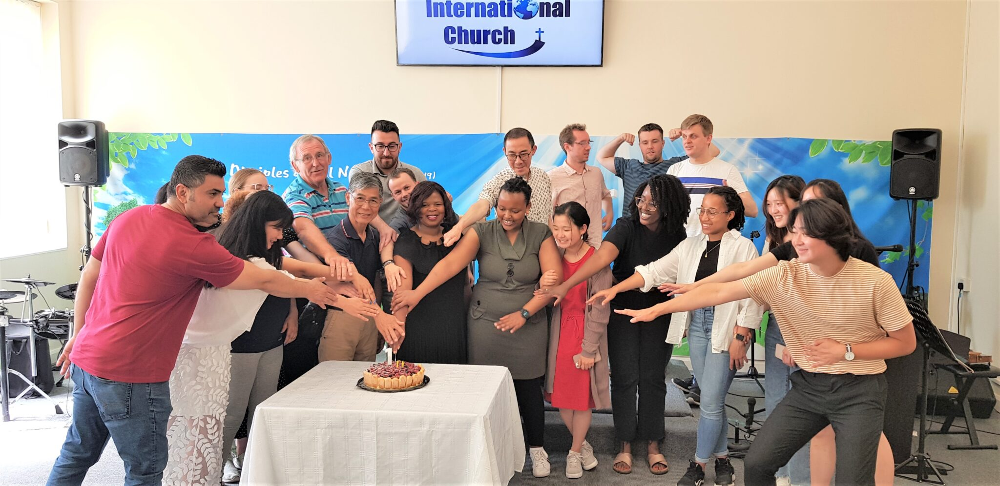

Welcome

Welcome A warm welcome from all of us at Cardiff International Church
(CIC)!
Whether you’re studying, working, or living in Cardiff, the capital of
Wales, we are here to be your home and family.
We meet on Sundays and weekdays for a variety of activities, and you are
most welcome to join us! We are conveniently located near Cardiff
University.
Looking forward to seeing you soon!
Upcoming Events
-
Prayer Breakfast at NIC: Sat 4 Oct (Breakfast 9:30am & Prayer 10:30am)
- Revival Worship Service with a Korean Worship Team: 5 Oct, 11am
- Joint Service with NIC: Sun 12 Oct, 11am
-
Revival Worship Night for the New Academic Year (New Students): Fri 17
Oct, 7-8:30pm (free meal & fellowship: 6-7pm)
- Church Trip to Bristol: Sat 18 Oct, 09:30am
-
Wales-Korea Revival Worship Night with Cardiff Churches & a Korean
Worship Team: Fri 21 Nov, 7-8:30pm (free meal & fellowship: 6-7pm)
-
Church Trip to Seoul, Korea: 28/Jul-11/Aug 2026 (1-2 weeks):
Children’s holiday club, tours, conference, cultural experiences, etc